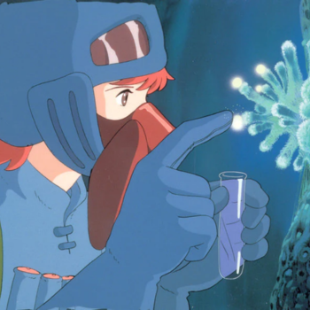
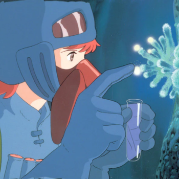
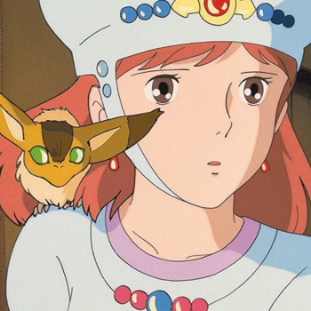
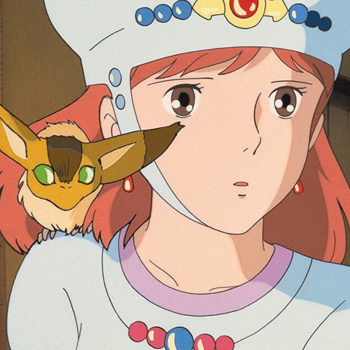
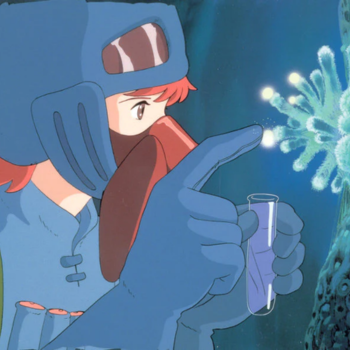
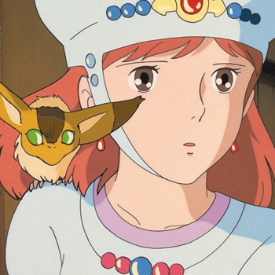

GALERIA DE FOTOS
 

 

2013 | 126 min | Drama
Vidas ao Vento é um filme animado japonês lançado em 2013, escrito e dirigido por Hayao Miyazaki e produzido pelo Studio Ghibli. A animação é uma cinebiografia ficcional de Jiro Horikoshi (1903-1982), projetista da aeronave de combate Mitsubishi A5M e seu sucessor, o Mitsubishi A6M Zero, usado pelo Império do Japão durante a Segunda Guerra Mundial. O filme é adaptado do mangá de Hayao Miyazaki, com o mesmo nome, que foi vagamente baseado no romance de 1937 de Tatsuo Hori, e na vida de Jiro Horikoshi. Foi o filme final dirigido por Miyazaki antes de se aposentar em setembro de 2013. No entanto, em 2017, Miyazaki anunciou que havia saído da aposentadoria para dirigir How Do You Live?, que tinha previsão inicial de ser lançado entre 2020 e 2021. Vidas ao Vento foi o filme japonês de maior bilheteria no Japão em 2013. Ele ganhou e foi indicado a vários prêmios, incluindo indicações para o Oscar de Melhor Animação, o Globo de Ouro de Melhor Filme Estrangeiro e o Prêmio da Academia do Japão para animação do ano.
A animação conta a vida do designer de aviões Jiro Horikoshi e os principais acontecimentos históricos que afetaram sua trajetória. O jovem Jiro sonha em voar e desenhar lindos aviões, inspirado pelo designer aeronáutico italiano Caproni. Não podendo tornar-se piloto por ter miopia desde a infância, Jiro entra na divisão de aviões de uma grande empresa de engenharia japonesa em 1927. Ele conhece e se apaixona por Naoko, desfruta de sua amizade com o colega Honjo e traz grandes inovações para o mundo da aviação.
Vidas ao Vento estreou nos cinemas brasileiros em 28 de fevereiro de 2014, tendo pré-estreias em algumas capitais do país, como São Paulo, Rio de Janeiro e Fortaleza. O filme chegou em BluRay e DVD lançado pela Califórnia Filmes em versão legendada. Atualmente está disponível junto a mais outros 20 filmes do Studio Ghibli na plataforma de streaming da Netflix.

